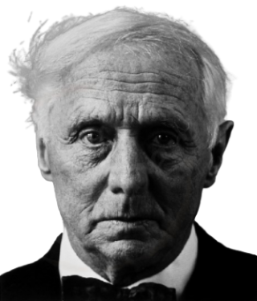

Max Ernst es uno de los artistas más importantes del Dadaísmo y el surrealismo, creador de distintas técnicas plásticas y una de las figuras más importantes de los artistas contemporáneos por su variada carrera artística. Nace en Brühl, Alemania, el 2 de abril de 1891.
Era hijo de Philip Ernst, maestro de sordos y pintor vocacional. A los 15 años quedó profundamente afectado por la muerte de su loro, justo cuando nació su hermana menor. Confuso por el incidente, empezó a relacionar aves y personas y esto se ve en sus cuadros, a menudo con cruces de pájaros y humanos.Ingresó en 1909 en la Universidad de Bonn donde estudió filosofía, historia del arte, literatura y psiquiatría.De 1910 a 1914 estudió filología clásica, filosofía, psiquiatría e historia del arte. Es ahí donde comenzaría a pintar sus primeras obras en serio.
De esta época datan sus primeras obras, cuya filiación expresionista revela la huella de su amistad con August Macke, miembro de El Jinete Azul. La famosa exposición del Sonderbund de 1912, que se celebró en Colonia, proporcionó a Ernst la ocasión de conocer directamente obras de Cézanne, Van Gogh, Gauguin, Munch y Picasso.
Es gracias a su formación y relaciones que quiso representar en su obra el mundo de los sueños. Fue un surrealista militante y llevó este movimiento por todo el mundo. Buscaba la libertad creativa al enfrentar un lienzo sacando material del subconsciente.
Ernst practicó diversas y originales técnicas pictóricas, siempre dentro de la estética de lo absurdo y dictadas por el automatismo característico del surrealismo, entre estas técnicas desarrolló durante toda su vida el procedimiento del collage realizando varias novela-collage , como en La mujer de cien cabezas (1929). Mediante el balanceo de una lata de pintura agujereada experimentó la técnica del goteo, claro antecedente del futuro dripping de Jackson Pollock.
Es gracias a el que se emplean técnicas como el Frottage (frotar sobre un objeto para transferir su textura en el soporte) o el Grattege (raspar pigmentos secos encima de maderas o lienzos).
Lucharía en la I Guerra Mundial, donde fue herido y eso le daría problemas también la II guerra: por un lado los franceses lo consideraban un alemán, en la prisión trabajó en la decalcomanía, técnica para transferir al cristal o al metal pinturas realizadas sobre un papel especialmente preparado. Con este procedimiento trabajó sus colecciones de Bosques y de la Historia Natural entre 1926 y 1928. Gran parte de su producción se caracteriza por una temática inquietante y por la aparición de formas orgánicas y minerales que crean una atmósfera de pesadilla.
